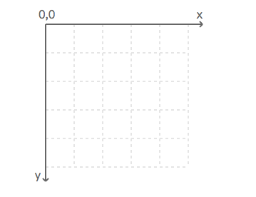
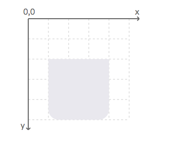
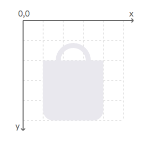
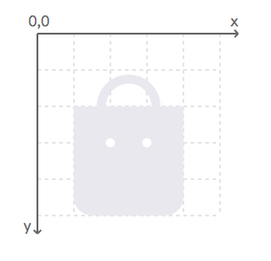
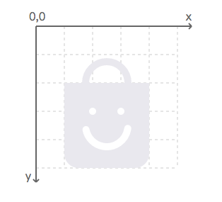
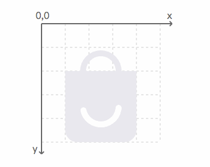
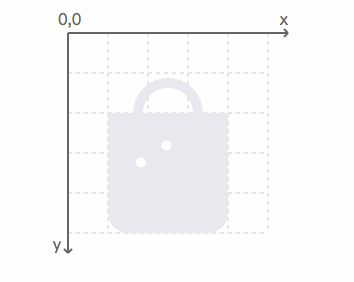
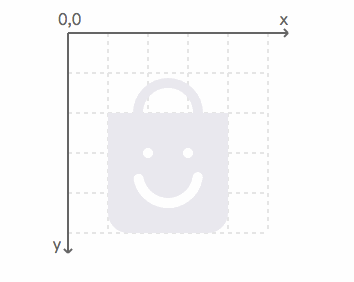
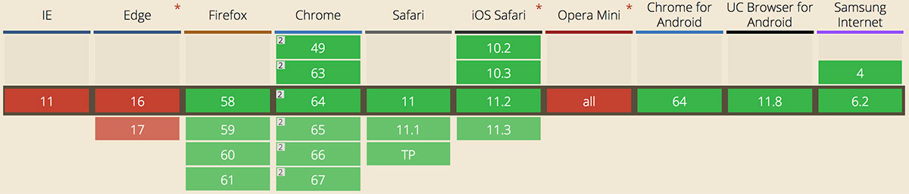

动效开发 5：SVG 动画
CSS3 动画已然足够强大，不过还是有一些它做不到的地方，例如轨迹（路径）动画的实现。配合 SVG，可以让 Web 动效有更多的可能性。
案例实战 - 实现一个购物袋的 loading 动效
下面以一个购物袋的 loading 动效为示例，带领大家上手 SVG 动画。
其中旋转通过 CSS 来完成，但是旋转之后圆弧缩短变成笑脸的嘴巴需要借助 SVG 来实现。
步骤 1 - 声明 SVG 视窗
<svg width="100" height=“100”></svg>
指定一个宽高都为 100 像素的区域，width="100" 和 width="100px" 是等价的，当然也可以使用其他的合法单位，例如 cm、mm、em 等。
阅读器会设置一个默认的坐标系统，见下图：左上角为原点，其中水平（x）坐标向右递增，垂直（y）坐标向下递增。

在没有指定的情况下，所有数值的默认单位都是像素。
步骤 2 - 绘制购物袋
购物袋由两个部分组成，先画下面的主体：
<path d="M 20 40 L 80 40 L 80 90 A 10 10 90 0 1 70 100 L 30 100 A 10 10 90 0 1 20 90" style="fill: #e9e8ee;" />
任何形状都可以使用路径元素画出，描述轮廓的数据放在它的 d 属性中。
样式中的
fill用来设置填充色路径数据由命令和坐标构成
指令
说明
M 20 40
表示移动画笔到 (20,40)
L 80 40
表示绘制一条线到 (80, 40)
A 10 10 90 0 1 70 100
绘制一个椭圆弧
圆弧命令以字母 A 开始，后面紧跟着 7 个参数，这 7 个参数分别用来表示：
- 椭圆的 x 半径和 y 半径
- 椭圆的 x 轴旋转角度
- 圆弧的角度小于 180 度，为 0；大于或等于 180 度，则为 1
- 以负角度绘制为 0，否则为 1
- 终点的x、y坐标

接下来绘制购物袋上面的部分：
<path d="M 35 40 A 15 15 180 1 1 65 40" style="fill: none; stroke: #e9e8ee; stroke-width: 5;” />
上面的部分是一个半圆弧，同样用路径来画出，当然也可以使用基础形状来完成。
样式中的 stoke 和 stroke-width 分别用来设置描边色和描边的宽度。

步骤 3 - 绘制眼睛
<circle cx=“40" cy="60" r="2.5" style="fill: #fff;" />
<circle cx="60" cy="60" r="2.5" style="fill: #fff;" />
使用基础形状，画两个小圆点。四个属性分别是位置坐标、半径和填充颜色。

步骤 4 - 绘制嘴巴
<circle cx="50" cy="70" r="15" style="fill: none; stroke: #fff; stroke-width: 5; stroke-linecap: round;transform: rotate(280deg); transform-origin: 50% 50%; stroke-dashoffset: -23; stroke-dasharray: 42, 95;”>
嘴巴是一段圆弧，我绘制了一个圆，然后描边了其中的一段，并且做了一个旋转，来让它的角度处于正确的位置。
stroke-linecap：用来定义开放路径的终结,可选round|butt|squarestroke-dasharray：用来创建虚线stroke-dashoffset：设置虚线位置的起始偏移值，在下一个步骤里，它会和stroke-dasharray一起用来实现动效

步骤 5 - 给嘴巴部分添加动效
@keyframes mouth {
0% {
transform: rotate(-80deg);
stroke-dasharray: 60, 95;
stroke-dashoffset: 0;
}
40% {
transform: rotate(280deg);
stroke-dasharray: 60, 95;
stroke-dashoffset: 0;
}
70%, 100% {
transform: rotate(280deg);
stroke-dashoffset: -23;
stroke-dasharray: 42, 95;
}
}
动画分为两个部分：
- 圆弧旋转
- 旋转之后缩短变形
在一个循环里，最后留有 30% 的时间保持一个停留状态。

步骤 6 - 给眼睛添加动画
两只眼睛都是沿着圆弧运动 ，例如左眼，首先用一个路径来规定它的运动轨迹：
<path id="eyeright" d="M 40 60 A 15 15 180 0 1 60 60" style="fill: none; stroke-width: 0;" />
然后使用 animateMotion 来设置动画：
<circle class="eye" cx="" cy="" r="2.5" style="fill: #fff;">
<animateMotion
dur="0.8s"
repeatCount="indefinite"
keyPoints="0;0;1;1"
keyTimes="0;0.3;0.9;1"
calcMode="linear">
<mpath xlink:href="#eyeleft"/>
</animateMotion>
</circle>
dur：动画的时间repeatCount：重复次数keyPoints：运动路径的关键点timePoints：时间的关键点calcMode：控制动画的运动速率的变化，discrete|linear|paced|spline四个属性可选mpath：指定一个外部定义的路径

步骤 7 - 将不同部位的动画组合到一起
- 眼睛的动画是从嘴巴旋转完成开始，到嘴巴变形完成结束，因此和嘴巴的动画一样，设置了四个对应的关键时间点。
- 为了让衔接更顺畅，眼睛的动画开始比嘴巴变形开始稍微提前了一点点。

Bingo！小功告成！查看 DEMO
初探 SMIL
SMIL 的全称为 Synchronized Multimedia Integration Language（同步多媒体集成语言），按照 W3C 规范对 SMIL 的描述，它是一种允许用户在网页上定义可交互多媒体内容的 XML 语言，可结合 XHTML 和 SVG 一起使用来实现网页动态效果。
在上面的案例中，我们使用了一个名为 animateMotion 的元素来实现眼睛的轨迹动画，其实便属于 SMIL 的知识范畴。
除了 animationMotion 用于实现轨迹动画之外，SMIL 还提供了另外两个元素来定义父级对象的动画，分别为：
animate：用于设置父元素的数值属性（如width、height、color等）的过渡动画animateTransform：用于设置父元素的transform属性的过渡动画
SMIL 的兼容性
除了微软系浏览器 及 Opera Mini 外，其他主流浏览器均支持 SMIL。

（数据来源：caniuse.com，截至 2018 年 3 月 14 日）
Chrome 45 版本曾声称准备弃用 SMIL ，但随后撤回了弃用计划。
SMIL 的一个小例子
如下利用 SMIL 同时改变圆的位置和颜色：
<svg width="100%" height="90" viewPort="0 0 90 90" class="demo-item">
<circle cx="55" cy="45" r="45">
<animate attributeType="XML" attributeName="cx" from="55" to="100%"
dur="5s" repeatCount="indefinite"/>
<animate attributeType="XML" attributeName="fill" from="#6190e8" to="#23232e"
dur="5s" repeatCount="indefinite"/>
</circle>
</svg>
可见 SMIL 的动画元素是可以叠加使用的，查看 DEMO。
扩展阅读
- Animating SVG with CSS：利用 SVG 结合 CSS 实现一个动态广告图
- Creating Cel Animations With SVG：利用 SVG 结合 CSS 实现逐帧（定格）动画
- Cel Animation：用于辅助实现 SVG 逐帧（定格）动画的一个 SASS @mixin 函数
- SVG - animationMotion：了解
animationMotion元素 - SVG animation with SMIL：了解使用 SMIL 实现 SVG 动画的方法
小结
SVG 在网页中的角色更像是类似图片一样的媒体对象，其动画也常常和 CSS 有关联，当然利用 SMIL 仍然可以为 SVG 添加独立的动效，除了微软系的浏览器不支持之外，其兼容性还是相当可观的。在平时工作过程中，矢量图标的动画、轨迹动画特别适合使用 SVG 来实现。